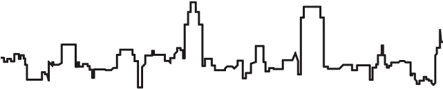

Introduction:
Hello dear readers my name is Sana , I'm an Architect, I graduated from the German Jordanian University, I'm really excited about this course because during my studies I learned so much about the user's experience in real life world and I now want to learn about user's experience in the virtual world!
During my work in the architectural field i gained experience in drafting 2D architectural schematics and drawings, creating interior and exterior design concepts for different buildings, Skilled in leveraging AutoCAD, Photoshop, Revit Autodesk software to create 3D architectural models, and Lumion for rendering 3D shots. Strong ability to coordinate and foster relationships with clients to promote innovative customized architectural concepts and designs.
Projects Catagories:
- Educational Projects
- Healthcare Projects
- Commercial Projects
- Governmental Projects
- Cultural Projects
Design Process:
- Site Analysis
- Concept
- Design
Top Ten Architectural Styles:
- Classical Architecture
- Neoclassical Architecture
- Greek Revival Architecture
- Industrial Architecture
- Bauhaus Architecture
- Victorian Architecture
- Modern Architecture
- Brutalist Architecture
- Contemporary Architecture
- Art Deco Architecture
Education:
- Graduated from the German Jordanian University with a Bachelor's Degree in Architecture.
- Did an exchange semester at Bochum Hochschule in Germany-Bochum
Experience:
- Worked for a year as Junior Architect at Yazeed+Farah Architects
- Worked for 5 months as an Architectural Intern at HDR GmbH Germany-Stuttgart
- Worked for 3 months as an Architectural Intern at Tha'er Qub's Architects